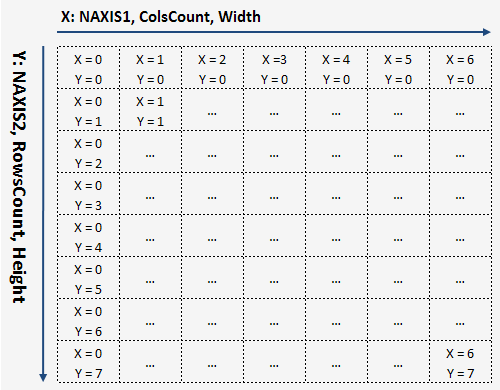

Unit: DeLaFitsClasses
Type: class
Inherited from: TFitsHeader
Description:
Data access.
Frame data - is a two-dimensional array of numbers.
The user reads and writes the data of frame according to the specified region.
The user specifies the type of buffer for data read/write − the type of elements (numbers) of two-dimensional array.
The property DataRgn defines full data region.
Access to the data is possible only for 2D-frames NAXIS = 2.
= 2.
An example of the data region of frame:
00 01 02 03 04 05 06 07 |
header fragment SIMPLE = T / conforms to FITS standard BITPIX = 16 / number of bits per data value NAXIS = 2 / number of axes NAXIS1 = 7 / length of first axis NAXIS2 = 8 / length of second axis BSCALE = 1.0 / data scaling factor BZERO = 0.0 / data offset END |
⇓

Protected methods
CheckCore override |
Checking a header core of frame: keyword NAXIS should be equal to two |
CheckStreamSize virtual |
Checking the stream size: - header size should be proportional to 2880 bytes; - data block size not less than NAXIS1 x NAXIS2 x BitPixByteSize(BITPIX) bytes; |
Init override |
Initializes the fields of the class |
Constructor & Destructor
constructor CreateJoin |
Creates an object from an existing 2D-frame (NAXIS = 2) |
constructor CreateMade |
Creates an object from an 2D-core |
Public methods
DataPrepare overload |
Preparing the Buffer of user: memory allocation |
DataRead overload |
Reading data |
DataWrite overload |
Writing data |
Public property
DataBitPix readonly |
|
Access to the pixels of the data |
|
Type of the elements of buffer of user for read/write data |
|
DataRgn readonly |
Full data region: DataRgn.X1 = 0; DataRgn.Y1 = 0; DataRgn.ColsCount = NAXIS1; DataRgn.RowsCount = NAXIS2; |
HduCore readonly |
2D-core of frame |
See Also:
—
Created with the Personal Edition of HelpNDoc: Easily create Qt Help files
Copyright © 2013-2016, Evgeniy Dikov
Support: delafits.library@gmail.com
Sources: https://github.com/felleroff/delafits